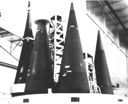
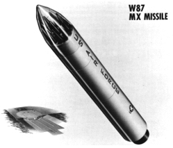
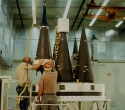
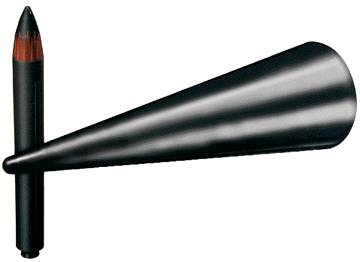
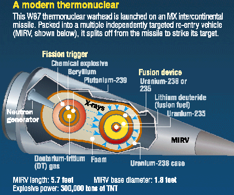

Last updated 1 September 2001
|  |  | |
| Mk-21 RVs mounted on a Peacekeeper (MX) bus. The W87 warhead itself is not visible. | ||
|  Click for larger image |  This image is from the Lawrence Livermore National Laboratory Directorate of Nuclear Weapon website, which was taken after the Wen Ho Lee scandal broke. | |
|  Click for larger image | ||
| This schematic of the W-87 is from the Cox Committee Report (the Report of the Select Committee on U.S. NationalSecurity and Military/Commercial Concerns with the People's Republic of China). Its accuracy is debatable but the features depicted make sense, and this diagram prompted former weapon physicist Sam Cohen to remark: ... But what should be at least as disturbing is that the Cox report presents a beautiful Insight Magazine, 16 July 1999 | ||
The W87 warhead belongs to the newest missile warhead family, sharing a design similar to the W88. It was designed for use on the Peacekeeper (MX) ICBM. It combines a relatively high yield with increased accuracy to make it an effective hard target kill weapon. It is hardened against nuclear effects, and has enhanced safety features.
| Yield | 300 Kilotons (Upgradable to 475 Kt) |
|---|---|
| Weight | Warhead: 440 - 600 lb; RV/Warhead: >800 lb ? |
| Length | 68.9 in |
| RV Base Diameter | 21.8 in |
| Nose Half Angle | 8.2 degrees |
| Number In Service | 525 |
Warhead is more efficient in its use of special nuclear materials than the similar yield W-78. This may refer in part to substituting depleted uranium for U-235 in the secondary.
Peacekeeper (MX) ICBM (LGM-118A). Each missile carries 10 W-87s, and is based in a hardened underground silo. As the Peacekeeper is retired under the provisions of START-II, these warheads will be used either to rearm Minuteman III missiles as single warhead missiles, or to equip Trident II D5 SLBMs.
See Principles of Nuclear Weapons Security and Safety for explanations of these features.
Primary fuze is inertial (i.e. dead reckoning using guidance information)
Secondary dual mode S-band radar fuze (4 antennas) for airburst and surface/proximity fuzing
Fuzing options:
Designed and developed by Lawrence Livermore National Laboratory (LLNL)
Mk-21 RV formerly known as the ABRV (Advanced Ballistic Reentry Vehicle) developed by AVCO Systems Division. Heavier, but higher accuracy and lower cost than the Mk-12A. Tests of the Mk-21's hardness to nuclear effects were conducted in 1984-86:
Design traces its origin to the LASL device tested in the 250 Kt Almendro shot (Operation Toggle), 6 June 1973 (13:00:00.08 UCT). 10 nuclear tests were required to certify the W-87 for stockpiling, including a full yield test prior to March 1976. These tests were complete by mid-1983. The Jefferson shot (Operation Charioteer) 22 April 1986 14:30:00.086 (UCT), 20-150 Kt, may have been a stockpile confidence test of the first production unit, possibly connected with one-point safety concerns.
Development of a higher yield Mod 1 for use on the (now cancelled) single warhead Small ICBM (SICBM or Midgetman) was begun in November 1987, but placed on hold in July 1988. This warhead was to have a higher yield than the Mod 0, which probably indicates the use of the oralloy ring upgrade option for a 475 Kt yield. The U.S. DOE began a life-extension program for W-87 in September 1994. This program is intended to extend the life of the warhead to 2020.
| February 1982 | Development engineering begun at LLNL |
|---|---|
| October 1983 | Production engineering begun |
| April 1986 | First production units completed |
| July 1986 | Quantity production begins |
| November 1987 | Development of W87 Mod 1 begins |
| July 1988 | Development of W87 Mod 1 put on hold |
| December 1988 | Quantity production ends |
Initial manufacture April 1986
Initial operating capability (10 MX missiles) achieved on 22 December 1986 at Warren AFB
Full deployment December 1988
Originally over 1000 W87s were planned (10 for each of 100 MX missiles). MX deployment was later cut to 50. Some of the warheads are Alt 323 modifications.
Total production: 525 W87-0 warheads
The W-87-0 will remain in the active stockpile under START II, equipping Minuteman III missiles instead of Peacekeepers.{kind=link}
{kind=link}